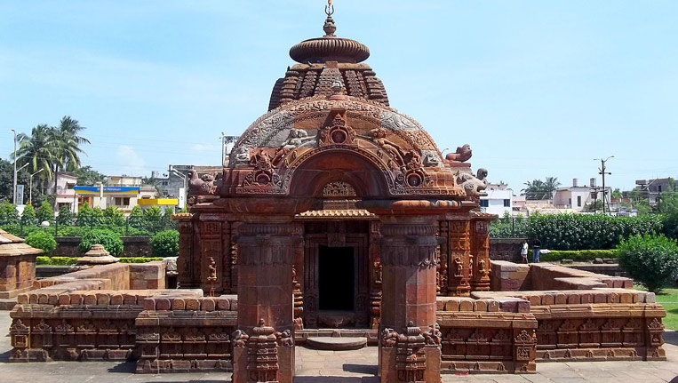

Incredible India
Major Religious Sites of Orissa
Odisha is a state in India. It is surrounded by West Bengal, Jharkhand, Andhra Pradesh, Chattisgarh and Bay of Bengal (with a coastline of 480 Km). During ancient times Odisha was known as Kalinga. The architecture of that period finds its distinct mark on many of the structures, which have survived the vagaries of time, in Odisha.
There are several temples in Odisha and every temple is a marvellous spectacle in its own right.
Puri Jagannath Temple
Jagannath temple is said to be built in the twelfth century. It is situated in Puri which is a city of Orissa. The temple is so famous that the place is also referred to as Jagannath Puri. It is dedicated to Lord Krishna. Inside the temple the idol of Lord Krishna (Jagannath) is kept alongside those of Lord Balabhadra (his brother) and Goddess Subhadra (his sister).Jagannath Temple is one of the temples which forms the Char Dham. Char Dham consists of four of the holiest pilgrimage sites of Hindu religion. These are the four places which a Hindu must visit during his/her lifetime to attain mokshya. They are spread across India in the four directions, in East (Jagannath Puri),West (Dwarka),North (Badrinath) and South (Rameshwaram). Mokshya is the ultimate freedom of the soul from the vicious circle of life and death. After attaining Mokshya, it is believed, the soul joins the supreme power, the master of the universe – God almighty. The temple is 214 feet long. The compound of the temple premises is very large. Apart from the main temple of Lord Jagannath, there are around thirty other, comparatively small temples in the complex. Around six thousands sevayats or servitors perform various rituals each day; there is a Kitchen where nearly ten thousand people are fed every day, the number gets more than doubled at the time of festivals. Non-Hindus are not allowed inside the temple premises. But they can have a panoramic view of the place from the terrace of the Raghunandan Library which is located just opposite to the temple. Rath yatra (or Chariot festival) is a festival which is famous world over. It gives a chance to the non-Hindus to get a glimpse of the Lord Jagannath, along with Lord Balabhadra and Goddess Subhadra. The non-Hindus can also climb up the chariot to get proper darshan (view) of the God. People from across the globe come to Puri to take part in the yatra. The event takes place around June-July every year. A new chariot is built every year strictly according to the specific instructions prescribed hundreds of years ago. The chariot is pulled by thousands and thousands of devotees.
Sun Temple

Sun Temple is situated in Konark, which is a small town in the district of Puri. That is why it is also known as Konark Sun Temple. The temple is built in the shape of a huge chariot. There are twelve wheels which are being dragged by seven horses. The chariot is made in the honor of Lord Sun. It is assumed to be built in thirteenth century by a king named Narasimhadeva. In India legends are usually associated with many things. There are a few legends associated with the making of this structure as well. One of them is related to Samba, one of the sons of God Krishna. It is believed that Samba was cursed with Leprosy by his father. To seek forgiveness, Samba prayed to Lord Surya (Sun) for twelve years. Being pleased with Samba’s dedication, Surya cured him. Samba made the temple to thank Surya for his kindness. Though major parts of the temple are damaged, the temple is a brilliant piece of architecture which is acclaimed all over the world. It’s an experience that can be best summed up in the words of Rabindranath Tagore: ‘Here the language of stone surpasses the language of man.’
Lingaraja Temple
Bhubaneshwar, the capital of Orissa, is also known as the ‘Temple City of India’ because of the hundreds of temples it encloses within its boundaries. Lingaraja Temple is one of the oldest and is the largest among them. The temple reflects the very essence of the Kalinga architecture. Lingaraja attracts plenty of religious and history enthusiasts every year. People usually worship Lord Shiva in the form of Linga. But in this temple the Lingaraj doesn’t only represent him; it’s a symbol of two gods – Shiva and Vishnu. That is why the Lord of this temple is called Harihara. There is a large lake called Bindu Sagar which surrounds the temple at one side. As per a legend, this tank was created by Lord Shiva and is filled with water from every holy water reserve in India. The lake is surrounded by many temples other than Lingaraj temple. It is said to have powers to heal physically and spiritually. People come in hordes to take bath in the sacred water, especially during the festivals. Shivratri is the primary festival of this temple. Like Jagannath temple, the people of religions other than Hinduism are disallowed here too. For such folks, there is a platform located outside the temple from where the sacred place can be seen.
Mukteshwara Temple
Situated in Bhubaneshwar, this tenth century temple is devoted to Lord Shiva. Its structure boasts of one of the most outstanding architectures of Orissa. Mukteshwar is the Lord of freedom – one who sets you free. There is a well, called Madicha Kunda, near the temple. Taking a bath here is believed to cure the problem of infertility in women. In the complex of the temple there are other small temples having several lingams. The Department of Tourism of the state organizes a dance festival annually, which lasts for three days, in the premises of the temple. The classical dance form of Odissi is celebrated in the festival, and several famous dancers participate in it. Brilliant performances amid a marvel of history, is a sight which should not be missed by anyone who even remotely follows the classical dance forms.
Vaital Deul Temple
It is one of the oldest temples which exist today. Believed to be built around early 9th century, the temple is devoted to the eight armed Goddess Chamunda. The temple is located in Bhubaneshwar. Chamunda is a fierce facet of Hindu Goddess Durga. Her name is believed to be made up of the names of the two devils ‘Chanda’ and ‘Manda’ who the Goddess killed. She closely resembles another very violent aspect of Durga which is Kali.